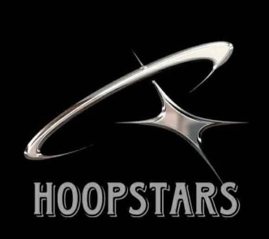
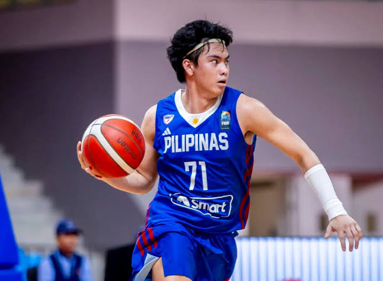
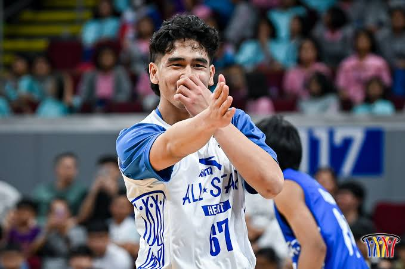
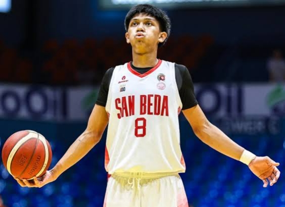
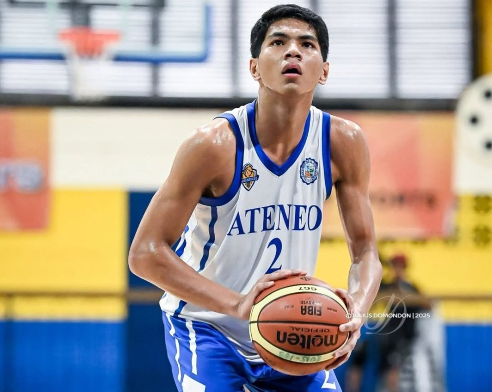
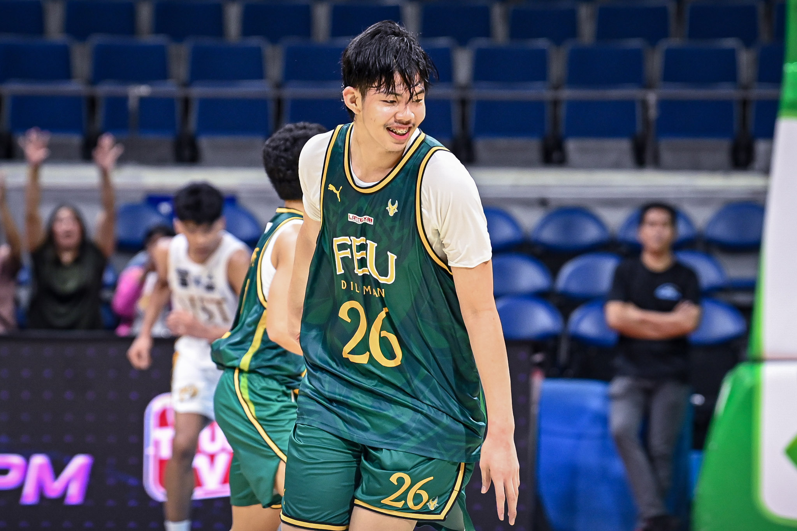

01 / PLAYER SCOUTING
Discover rising basketball talent from Metro Manila through player profiles, statistics, and scouting reports.

School: Saint Augustine Institute of Pampanga
Position: Point Guard
PPG: 18.9
RPG: 5.3
APG: 8.2
Scouting Report: Best known for his playmaking and basketball IQ. Had a standout performance in the FIBA U18 Asia Cup, leading the tournament in steals and assists.

School: Utah Prep
Position: Shooting Guard
PPG: 26
RPG: 7.5
APG: 4.8
Scouting Report: Confident player who has a solid perimeter game. Awarded as the UAAP Season 87 Juniors Basketball MVP with De La Salle Zobel.

School: San Beda University-Alabang
Position: Small Forward
PPG: 16.3
RPG: 11.4
APG: 3.2
Scouting Report: Tall frame and insane athleticsm, also has a solid jumper and can guard any position on the floor with his size. Mythical 5 awardee in the 2025 Palarong Pambansa Men's Basketball.

School: Ateneo de Davao University
Position: Power Forward
PPG: 14.4
RPG: 12.7
APG: 4.6
Scouting Report: Outsanding defensive presence in the backcourt, some scouts say he's undersized for a big but his hustle and grit says otherwise. Awarded Best Defensive Player in 2026 NBTC Manila Live.

School: Far Eastern University-Diliman
Position: Center
PPG: 15.7
RPG: 13.4
APG: 3.8
Scouting Report: Fundamental big, impressive rebounding and basketball IQ. Shared the court with Kenji Moral in the 2026 U18 FIBA Asia Cup and recently acquired a US NCAA Division 1 offer with Nevada State University.